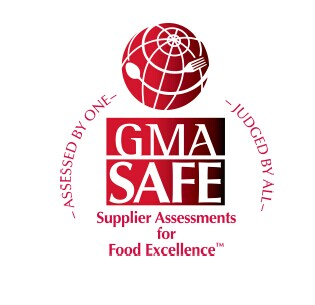

食品安全 / GMA-SAFE
GMA-SAFE 食品卓越供应商评估
GMA-SAFE 评估提供最综合的食品防护有效验证，包含六个特殊工业评估（食品防护，初级包装，防腐剂，仓
储运输，香精和奶制品），另外，还有一个快速评估。
和其他的审核不同，GMA-SAFE程序提供给零售商和制造商一个他们供应商工厂的虚拟体验，充分评估他们食
品防御程序，通过检查确认供应商如何良好的执行程序和程序的有效性。
GMA-SAFE 目前被超过100个大型食品加工商接受。包括，西夫韦（美国第四大零售连锁店）、亨氏、可口可
乐、宝洁、通用磨坊。
GMA-SAFE总共分五个类别
1.管理职责
2.基础
3.产品防护，危害预防系统
4.制造业质量体系
5.法规因素
1.管理职责
2.基础
3.产品防护，危害预防系统
4.制造业质量体系
5.法规因素
